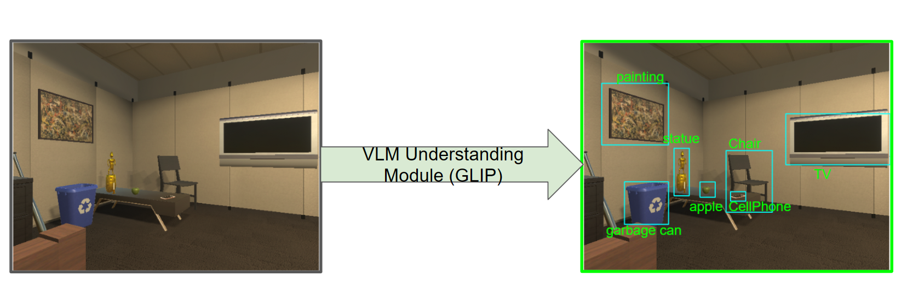
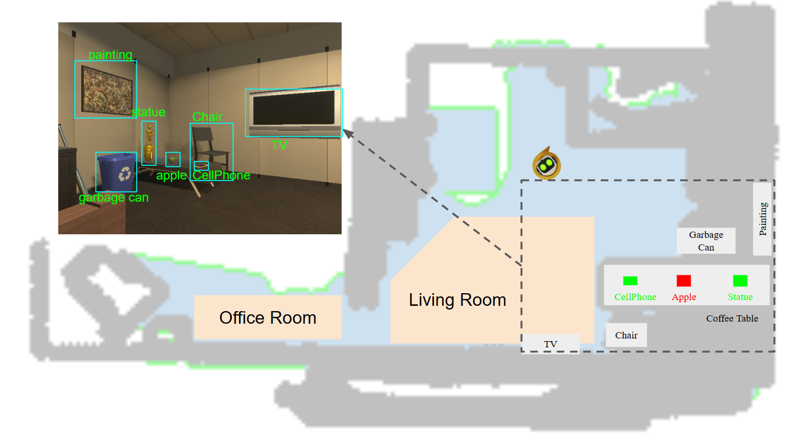
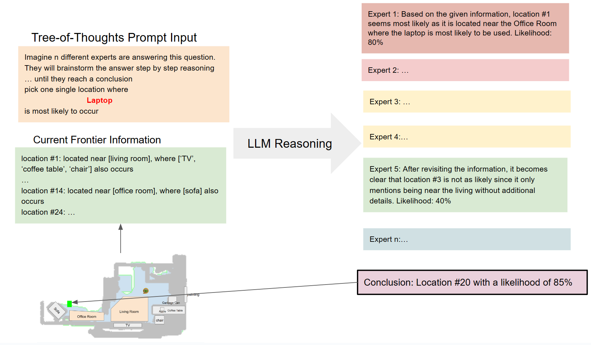
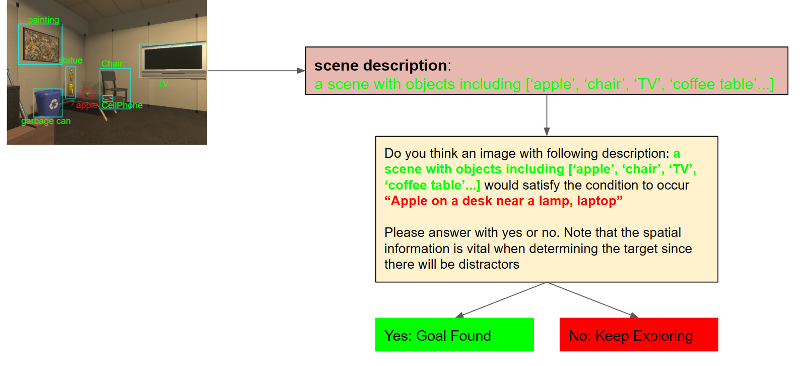

Approach

VLTNet coordinates four main modules to tackle the L-ZSON tasks:
Vision Language Model Understanding Module
Based on RGB observations,the VLM understanding Module will utilize pre-trained Visual-Grounding Models to detect objects seen in the current frame. Our VLNet Model applied GLIP to identify each object and draw out corresponding bounding boxes.

Semantic Mapping Module
The Semantic Mapping module reconstructs a 2D navigation map based on the depth input, and robot pose. Based on the semantic understanding of objects and rooms obtained by the VLM Understanding Module, the mapping module locates identified objects in the navigation map to generate a semantic navigation map.
Tree of Thoughts Exploration Module
Tree of Thoughts Exploration Modules incorporates Frontier-Based Exploration as the basis for navigation strategies. By analyzing current semantic information provided by the navigation map, VLTNet innovatively utilizes LLM such as GPT-3.5 to identify unexplored areas that are likely proximate to the target object. Noting the potential inaccuracies and multiple candidate frontiers inferred by the language model, we integrate the tree-of-thoughts mechanism. ToT employs a structured tree-based approach to decision-making, allowing for organized and systematic exploration, which enhances the model's ability to make informed choices in complex environments. Therefore, our method aids in refining and pinpointing the most promising frontier points, effectively bridging the vast insights of the language model with precision in frontier selection, thus enabling more informed and context-aware robotic exploration.
Goal identification Module
The Goal Identification module determines whether the current object navigated to matches the target object. Our definition of the target object extends beyond simple categories, like "alarm clock." It encompasses more intricate spatial or appearance-based descriptions such as: "Alarm clock on a dresser near a desk lamp, bed" or "Small, metallic alarm clock." Thus, a basic algorithm that merely checks if the current object is an "alarm clock" is insufficient. To make a more informed judgment about whether the scene's context aligns with the target's description, we employ GPT-3.5. By analyzing the textual descriptions of the target and the currently detected object, this model offers a profound semantic understanding. It takes into account context and semantic associations to accurately determine the congruence between them.
Trajectory visualization:
Here we give a visualized comparison between VLTNet and ESC on different benchmarks in PASTURE Dataset.